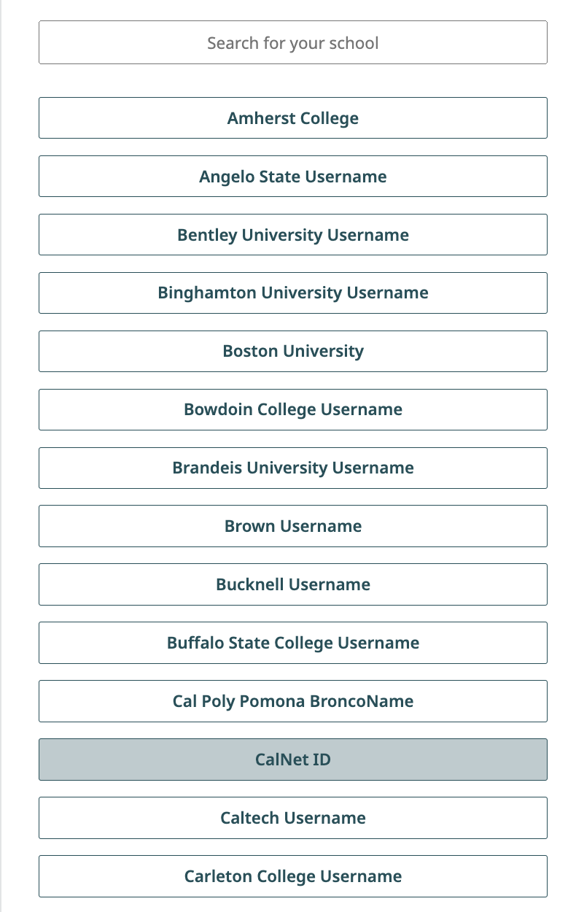
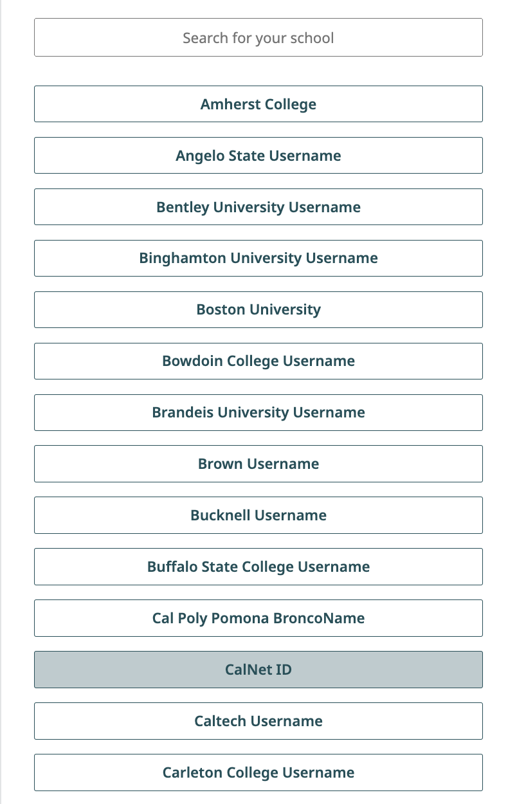

Lab 0: Getting Started
Due by 11:59pm on Monday, June 24.
Starter Files
Download lab00.zip. Inside the archive, you will find starter files for the questions in this lab, along with a copy of the Ok autograder.
This lab is required for all students and counts toward your lab score, but try to complete it at home before you come to Lab 1.
Introduction
This lab explains how to setup your computer to complete assignments and introduces some of the basics of Python. If you need any help at any time through the lab, please feel free to come to office hours, post on Ed, or come to your assigned lab section.
Here's an outline of the lab:
Setup: Setting up the essential software for the course. This will require several components, listed below.
- Install a Terminal: Install a terminal so you can interact with files in this course and run OK commands. If you have a terminal on your computer and feel comfortable using it, you can skip this part.
- Install Python 3: Install the Python programming langauge to your computer. If you already have Python 3.7 or later (ideally Python 3.9) installed, you can skip this part.
- Install a Text Editor: Install software to edit
.pyfiles for this course (e.g. VSCode, Atom, etc.). You can skip this part if you already have a text editor you like.
- Walkthrough: Using the Terminal: This walks you through how to use the terminal and Python interpreter. If you already feel comfortable with both of these you do not need to read this section.
- Walkthrough: Organizing your Files: This section walks you through how to use your terminal to organize and navigate files for this course. Everyone should at least skim this section, as it has important information specific to this class, but if you are already comfortable navigating directory structures with a terminal much of this will feel familar.
- Required: Doing the Assignment: You must complete this section to get points for the assignment. Here you will practice the different types of problems you will be asked to do in lab, homework, and project assignments for this course. The main goal of this assignment is to give you practice using our software.
- Required: Submitting the Assignment: You must complete this section to get points for the assignment. This will walk you through how to turn in your work after completing the previous section and how to verify that your work is turned in on Gradescope.
- Appendix: Useful Python Command Line Options: These are commands that are useful in debugging your work, but not required to complete the lab. We include them because we imagine they're likely to be helpful to you throughout the course.
Setup
To setup your device, select the guide that corresponds to your operating system.
Backup setups
In case you had troubles installing a Python interpreter, text editor, and terminal, or if you are using something that does not allow you to install software, like an iPad, you can as a temporary measure do the assignments in using some of the following steps while you acquire more appropriate hardware.
Soda lab computers
You will need an instructional account which will allow you to log into and use any of the lab computers in Soda. You can see your existing instructional accounts as well as make new instructional accounts for applicable classes by going to: https://inst.eecs.berkeley.edu/connecting.html.
You can login via your CalNet ID to the site. To make an instructional account for this course, click "Get a new account" for the row that has "cs61a" as its purpose.
Once you've made your account, you can then use it to log into a Soda lab computer, and work on course assignments using that computer.
Online editors as a backup
Important: Both of the alternatives listed below are not ideal for use in this course. We recommend being able to use your own local setup or using the lab computers in Soda (which you can access with your course instructional account).
61A Code:
You can use 61A Code, the course online environment where you can edit, run, debug, visualize, and share programs with staff. The documentation for 61A Code can be found here: 61A Code docs.
Note: You will not be able to run
okcommands in 61A Code, which you will need to do for unlocking tests, running tests, and submitting assignments.
Steps to complete this assignment on 61A Code:
- Visit 61A Code.
- Open an existing file: go into your
cs61afolder, then the assignment folder (lab00), in which you can find the files for this assignment. - You will be prompted to authorize the editor. You can click on "Confirm". Back to the editor itself, you can then open the files you would like to edit.
- To open the terminal, click on "Console".
- You can use the editor to write your code and the console to run your code.
Datahub:
Another alternative to working locally is to use Datahub at UC Berkeley.
Steps to complete this assignment on Datahub:
- Visit Datahub.
- Upload the assignment zip file to datahub.
- Open a terminal by pressing "New" in the top left corner and selecting the terminal.
- Navigating to where the zip file is and running
unzip lab00.zip. - Opening up the code file (
lab00.py) and typing in it, then saving. - Now you can submit the lab.
Your First Assignment
When working on assignments, ensure that your terminal's working directory is correct (which is likely where you unzipped the assignment).
1) What Would Python Do? (WWPD)
One component of lab assignments is to predict how the Python interpreter will behave.
Enter the following in your terminal to begin this section:
python3 ok -q python-basics -uYou will be prompted to enter the output of various statements/expressions. You must enter them correctly to move on, but there is no penalty for incorrect answers.
The first time you run Ok, you will be prompted for your bCourses email. Please follow these directions. We use this information to associate your code with you when grading.
>>> x = 20
>>> x + 2
______22
>>> x
______20
>>> y = 5
>>> y = y + 3
>>> y * 2
______16
>>> y + x
______282) Implementing Functions
Labs will often ask you to implement functions. Open lab00.py in your text
editor. You should see a function called twenty_twenty_four that has a blank
return statement. That blank is the only part you should change. Replace it
with an expression that evaluates to 2024. What's the most creative expression
you can come up with?
Don't forget to save your assignment after you edit it! Even better, turn on Auto Save (in the file menu of VS Code).
3) Running Tests
In CS 61A, we will use a program called ok to test our code. ok will be
included in every assignment in this class.
Back to the terminal—make sure you are in the lab00 directory we created
earlier (remember, the cd command lets you change
directories).
In that directory, you can type ls to verify that there are the following
four files:
lab00.py: the starter file you just editedok: our testing programlab00.ok: a configuration file for Ok
Now, let's test our code to make sure it works. You can run ok with this
command:
python3 okRemember, if you are using Windows and the
python3command doesn't work, try using justpythonorpy. See the the install Python 3 section for more info and ask for help if you get stuck!
If you wrote your code correctly and you finished unlocking your tests, you should see a successful test:
=====================================================================
Assignment: Lab 0
=====================================================================
~~~~~~~~~~~~~~~~~~~~~~~~~~~~~~~~~~~~~~~~~~~~~~~~~~~~~~~~~~~~~~~~~~~~~
Running tests
---------------------------------------------------------------------
Test summary
2 test cases passed! No cases failed.If you didn't pass the tests, ok will instead show you something like this:
---------------------------------------------------------------------
Doctests for twenty_twenty_four
>>> from lab00 import *
>>> twenty_twenty_four()
0
# Error: expected
# 2024
# but got
# 0
---------------------------------------------------------------------
Test summary
0 test cases passed before encountering first failed test caseFix your code in your text editor until the test passes.
Every time you run Ok, Ok will try to back up your work. Don't worry if it says that the "Connection timed out." We won't use your backups for grading.
While
okis the primary assignment "autograder" in CS 61A, you may find it useful at times to write some of your own tests in the form of doctests. Then, you can try them out using the-m doctestoption for Python).
Task C: Submitting the Assignment
Now that you have completed your first CS 61A assignment, it's time to turn it in. You can follow these next steps to submit your work and get points.
Submit with Gradescope
Log in with School Credentials using your CalNet ID to Gradescope. You’ll be taken to your Dashboard as soon as you log in.
 

- On your Dashboard, select the course CS61A. You should have already been added to Gradescope. If this is not the case, please make a private Ed post. This will take you to the list of assignments in the course that you’re able to submit. On this list, you will see the status of the assignment, the release date, and the due date.
- Click on the assignment Lab 0 to open it.
When the dialog box appears, click on the gray area that says Drag & Drop. This will open your file finder and you should select your code file
lab00.pythat you edited for this assignment.
Once you’ve chosen your file select the Upload button. When your upload is successful, you’ll see a confirmation message on your screen and you’ll receive an email.

Next, wait a few minutes for the autograder to grade your code file. Your final score will appear at the right and your output should be the same as the one you tested locally. You can check the code that you submitted at the top right where there is a tab labeled Code. If there are any errors, you can edit your
lab00.pycode and click Resubmit at the bottom of your screen to resubmit your code file. Assignments can be resubmitted as many times as you’d like before the deadline
Your responses to WWPD questions are not submitted to Gradescope, and they don't need to be. Lab credit is based on code writing questions.
Congratulations, you just submitted your first CS 61A assignment!
Appendix: Useful Python Command Line Options
Here are the most common ways to run Python on a file.
Using no command-line options will run the code in the file you provide and return you to the command line. If your file just contains function definitions, you'll see no output unless there is a syntax error.
python3 lab00.py-i: The-ioption runs the code in the file you provide, then opens an interactive session (with a>>>prompt). You can then evaluate expressions, for example calling functions you defined. To exit, typeexit(). You can also use the keyboard shortcutCtrl-Don Linux/Mac machines orCtrl-Z Enteron Windows.If you edit the Python file while running it interactively, you will need to exit and restart the interpreter in order for those changes to take effect.
Here's how we can run
lab00.pyinteractively:python3 -i lab00.py-m doctest: Runs the doctests in a file, which are the examples in the docstrings of functions.Each test in the file consists of
>>>followed by some Python code and the expected output.Here's how we can run the doctests in
lab00.py:python3 -m doctest lab00.pyWhen our code passes all of the doctests, no output is displayed. Otherwise, information about the tests that failed will be displayed.